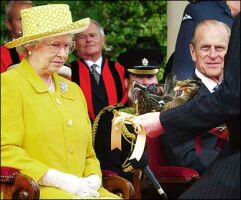

Quand lé Rouai est en Jèrri, il est l'suprême seigneu dans l'Ile et n'y'a qu'à li qu'hommage est deu - mais, suivant iun des privilèges accordés à l'Ile, l'honneur n'est deu qué quand lé Rouai est actuellement en Jèrri. La seule exception est quand lé Rouai n'peut pon êt' présent en pèrsonne, et tch'il autorise eune Commission Spéciale d'agi pour li. Dans chu cas-là, l'hommage est donné à la Commission comme réprésentante dé la personne dé Sa Majesté - mais ch't' occasion est rare.
L'hommage deu à la personne dé Sa Majesté exige qué lé seigneu sé prononce comme étant san "liège", et i' faut qué ch'la s'faiche en pèrsonne.
Lé seigneu (disons, par exempl'ye, lé chein d'St. Ouën) met ses mains entre les mains d'Sa Majesté, lî disant en même temps : “ J'sis votre homme à Vouos porter fouai contre tous!”
En Jèrri, hommage au Rouai est deu par les francs tenants (l'y-en a chînq) d'Sa Majesté - St. Ouën, Rôzé, La Trinn'té, Samarès et Mélêches - et par les aut' seigneurs.
Dé toute chutte noblièche dé l'Ile, l'y-en a deux tchi daivent des services spéciaux tchi sont mentionnés dans l's Extentes dé 1331 et 1607 :-

1) Les seigneurs dé Rôzé et des Augrès daivent aller à j'va dans la mé à la rencontre du Rouai quand il arrive en Jèrri, jusqu'à qu'la mé touche la souos-ventriéthe du j'va. I' dait l'même strvice pour èrcondithe lé Rouai quant i' tchitte l'Ile.
2) Lé Seigneu d'Rôzé est lé Bouteilli (“Butler”) du Rouai quand Sa Majesté est en Jerri.
3) Lé Seigneu d'La Trinn'té dait bailli un coupl'ye d'maillards au Rouai.
Quand lé Rouai George V vînt en Jèrri lé 11 dé Juilet mil neu' chent vîngt-ieune, Reginald Raöul Lemprière, Ecuier, lé Seigneu d'Rôzé dé chu temps-là et (s'lon l'“Evening Post ") Bouteilli héréditaithe du Rouai, et l'Mâjeur John Francis Giffard, Seigneu des Augrès - tchi d'vaient, comme j'vouos l'disons, lé sèrvice dé rencontrer lé Rouai au bord de la mé - allîtent à sa rencontre sus la cauchie Albèrt. Lé Rouai lus dit: “Av'ous peux d'vouos mouoilyi dans l'ieau ou d'sali vouos neuves braies, ou d'attraper eune suée d'fraid ? . . Ou' n'avez pon fait vouot' dévé - ch'est à dithe pas d'la maniéthe spécifiée dans l'Extente!" Ou n'nouos criyiz p't'êt pon, bouannes gens, mais j'avons ouï d'bouanne part qué ch'la s'est rêellement passé ; appathemment lé Rouai connaissait nouos couôteunmes et l'sèrvice que j'lî d'vons !
Mais, v'nons à la Cour d'Héritage. Quand lé Rouai entrit dans la Cour, lé Bailli, Messire William Henry Venables Vernon, lî dit: “Sire, Né v'chîn la Cour d'Héritage dé Votre Majesté - la pus vielle Cour dans l'ouêst dé l'Europe. Oulle a siégi ichîn dépis l'jour qu'ou' cêssit à siégi dans l'Vièr Châté d'Gouôrray. Vouos pliaît-i' qu'nouos seigneurs Vouos faichent hommage?”
Le Rouai ayant grâcieusement donné san consentement, san Protchuleux-Général, Henry Edouard Lé Vavasseur dit Durell, Ecuier, fit l'appel en disant : “Il a plieu a Sa Majesté lé Rouai, not' Duc, dé faithe compathaître dévant li ses francs tenants et accepter lus fouai et hommage!" Et pis les seigneurs fûtent app'lés dans l'ordre suivant :-
|
St. Ouën |
Reginald Malet de Carteret. |
|
Rôzé |
Reginald Raöul Lemprière. |
|
St. Germain |
Charles Edouard Malet de Carteret. |
|
St. Jean la Hougue Boëte |
Alexander S. Raworth. |
|
Les Augrès |
John Francis Giffard. |
|
La Hague |
Charles Lambert Helleur Le Cornu. |
|
Franc Fief en St. Brélade |
Robert Ranulph Marett. |
|
Es Poingdestres |
Robert Clément Le Quesne. |
|
Lemprière en St. Hélier |
Ernest Percy Marquand Le Sauvage. |
Viyiz étout: